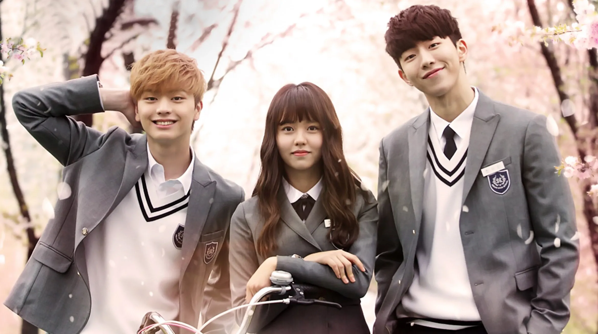
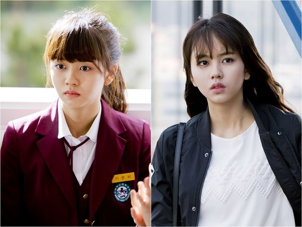

MY FAVORITE DORAMS
Who Are You: School 2015 (2015)?
Who Are You: School 2015 might sound familiar to you if you have watched its previous series. It is the sixth installment of KBS School series, which started to air from 1999 to 2002, then again in 2013. Basically, it features a familiar plot and characters, but it still depicts the life of every student in Korea.

